DeepLook builds low-cost underwater drones (ROVs) that let Mediterranean sea-bass and sea-bream farms inspect nets, cages and moorings every week, without sending divers down.
Why Europe, why now → Meet the founder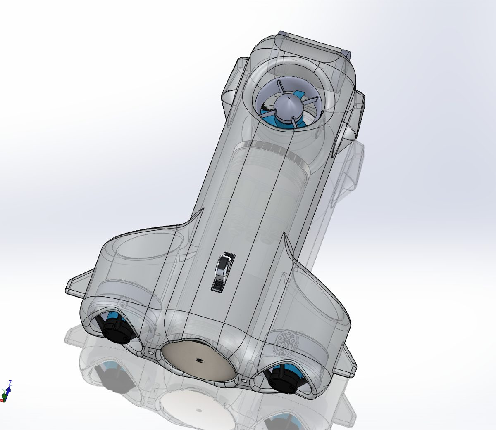
DeepLook ROV · SOLIDWORKS 3D renderMost Mediterranean finfish farms are small and medium-sized companies. They rely on divers to check their nets, and that model doesn't scale.
Repeated dives in currents and low visibility. Hard to staff, costly to insure, regulated more tightly every year.
Dives last 30–45 minutes and stop in bad weather, so nets are checked far less often than they should be.
One undetected hole can release tonnes of fish. Escapes are a financial loss and a growing environmental and regulatory issue in the EU.
Industrial ROVs are built for oil & gas and priced accordingly. DeepLook is designed from day one for one job: frequent, routine inspection of fish-farm cages, at a price an SME farm can justify.
Human risk, short dives, weather-dependent, verbal reports.
No one in the water, longer missions, 4K video and a digital report every time.
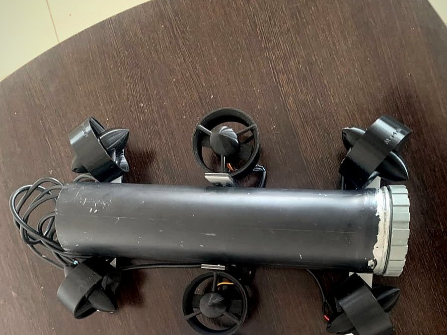
EU aquaculture is concentrated in four countries, and sea bass and sea bream, farmed in open-sea cages, are its Mediterranean backbone.
Italy is Europe's largest consumer of sea bass, and open-sea farming is being pushed by new EU funding and dedicated aquaculture zones. Close to our Toulon base, with a growing number of offshore projects that will need inspection from day one.
Europe's leading producer of sea bass and sea bream, with over a hundred cage-farming companies. The largest single market for net inspection in the EU.
Spain is the EU's largest aquaculture producer; Croatia's cage farming has grown fastest in a decade and sells largely to Italy; France is our home base.
Beyond fish farms, the same drone serves ports, dams, offshore wind and marine research: adjacent markets we will open once the core product is proven.
Selling ROVs is only one part of DeepLook. Most of our value comes from the services we deliver around them, with recurring contracts.
Our team inspects nets, cages and moorings for the farm on a regular schedule, with a 4K video and a report every time. No upfront cost for the customer.
Yearly contracts to maintain, repair and upgrade the ROVs used by our customers, so their equipment is always ready to dive.
Tailor-made underwater systems for marine-sector companies with specific needs: ports, offshore structures, research, special sensors or tools.
For companies that want their own drone: the ROV with training, delivered with a maintenance contract.
Targets from our 5-year business plan, mixing inspection services, maintenance contracts, custom projects and ROV sales.
Figures are business-plan targets, not results. They come from our first plan, built for the Tunisian market and converted to euros (≈ €1 = 3.35 TND). European pricing will be set during the 2027 pilots.
Underwater robotics for aquaculture is a proven market: Norwegian salmon farming already relies on it. The Mediterranean SME segment is still underserved.
Autonomous net cleaners and inspection systems built for large Norwegian salmon farms. Powerful, but designed and priced for a different industry and scale.
Affordable observation drones for hobbyists and many industries. Not designed around the daily workflow and reporting needs of a fish farm.
Built only for Mediterranean cage farming: robust enough for daily professional use, priced for SMEs, with inspection reports made for farm managers.
SOLIDWORKS design, standard engineering drawings, 3D-printed thrusters, onboard electronics and software. Every part of the first prototype was made by the team.
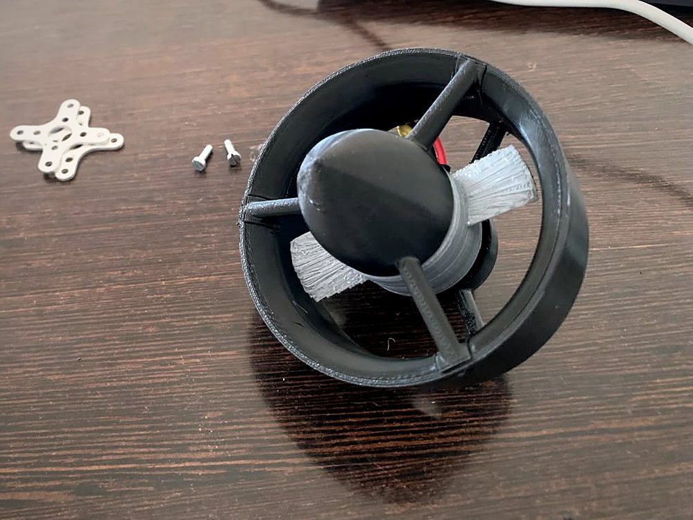
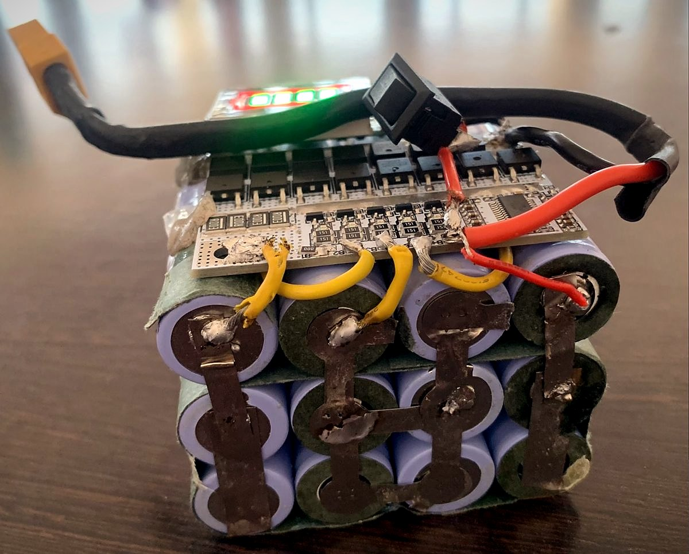
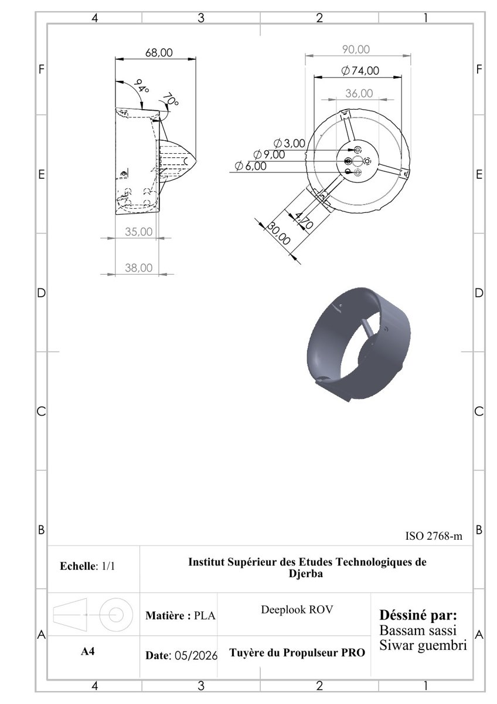
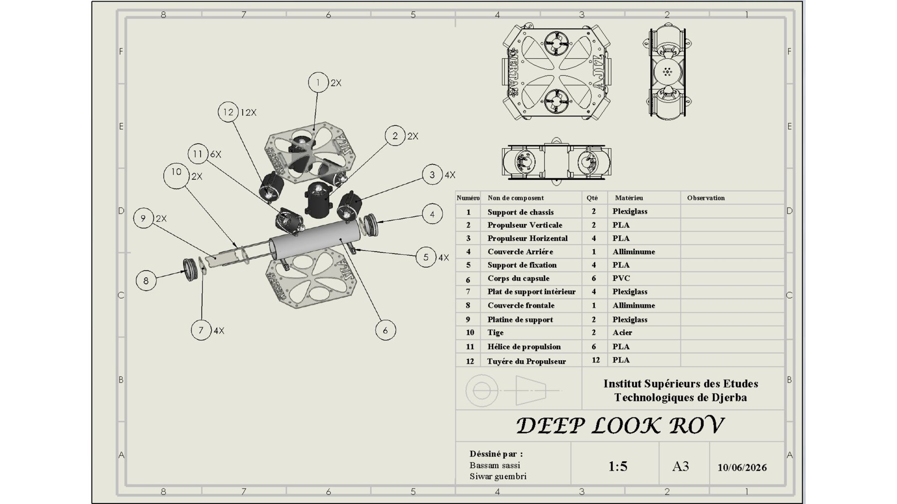
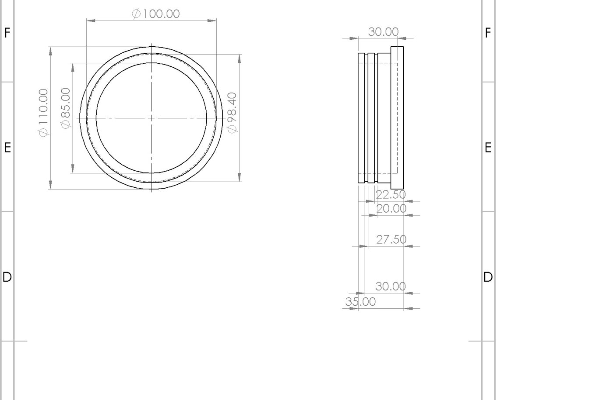
First ROV designed, built and presented as a final-year engineering project (ISET Djerba, Tunisia).
Pitched at the StarTech Incubator Demo Day (EFE-Tunisia).
The founder joins ISEN Méditerranée, at the heart of France's leading naval and marine-robotics ecosystem.
Field trials with first fish farms, product v2 based on their feedback, incubation and first funding.
Inspection and maintenance contracts in Italy, Greece and Spain, and first custom projects for marine-sector companies.
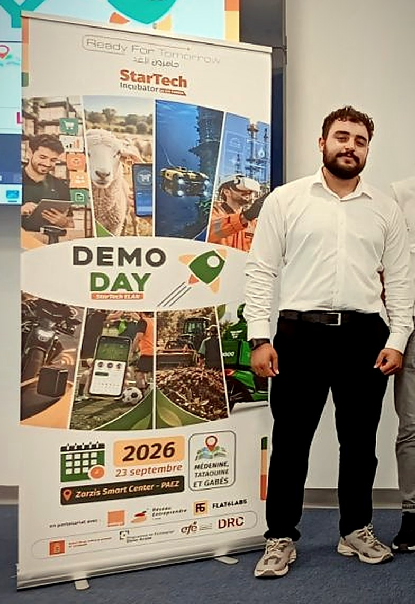
Bassam grew up in Gabès, on the Tunisian coast, where the sea is part of everyday working life. He graduated in Mechatronics from ISET Djerba with highest honours (4th in his class), and built the first DeepLook prototype as his final-year project.
He is now an engineering student at ISEN Méditerranée in Toulon, combining mechanical design, embedded systems and hands-on fabrication. He also teaches robotics and SOLIDWORKS, and is an active member of JCI, Jeune Ingénieur and IEEE.
See full portfolio → Download CV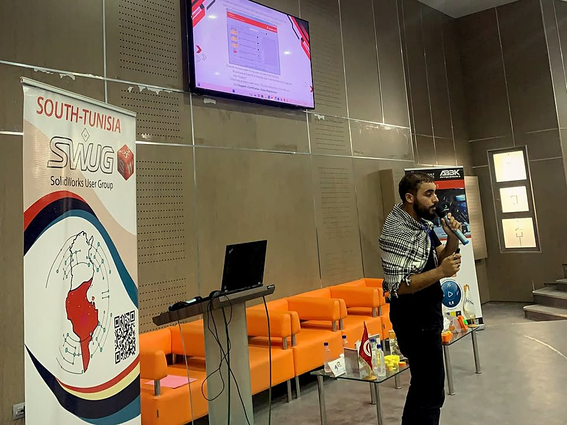
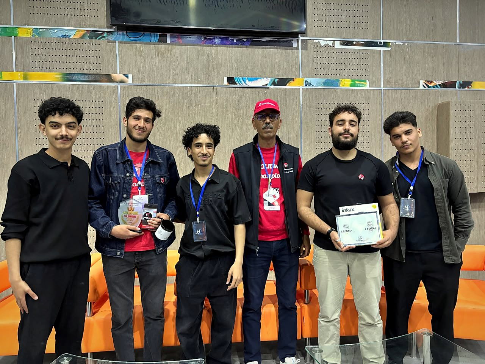
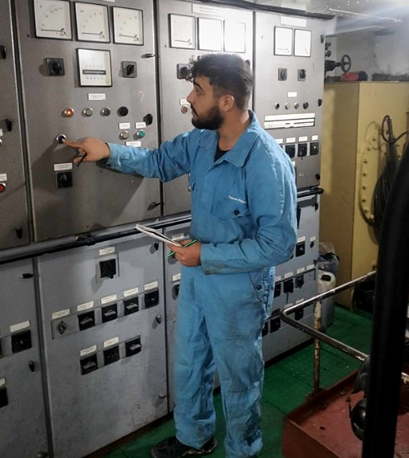
DeepLook is moving from prototype to field validation. We are looking for partners to get there.
Sea-bass and sea-bream farms in Italy, France, Greece or Spain willing to test DeepLook.
Marine-robotics labs and industry partners.
Programmes focused on the blue economy.
Business angels and funds passionate about the blue economy.